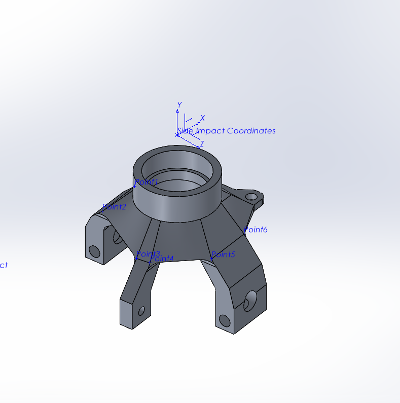
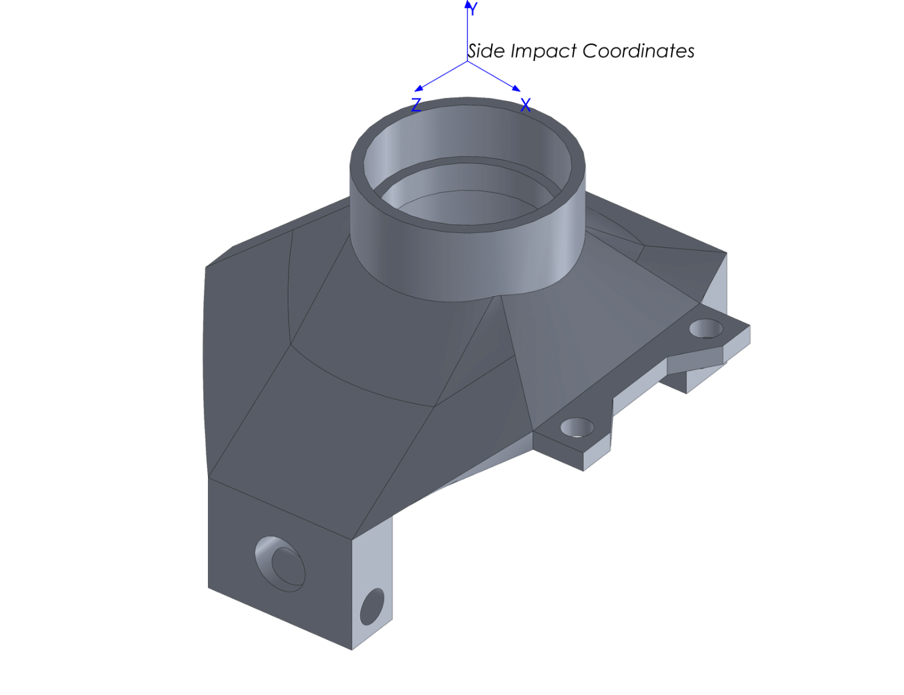
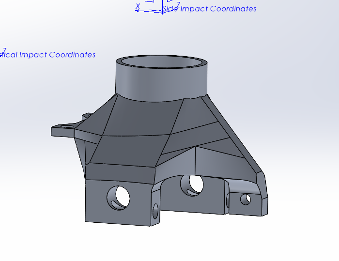
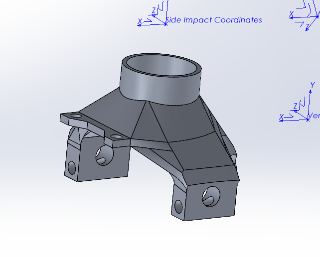
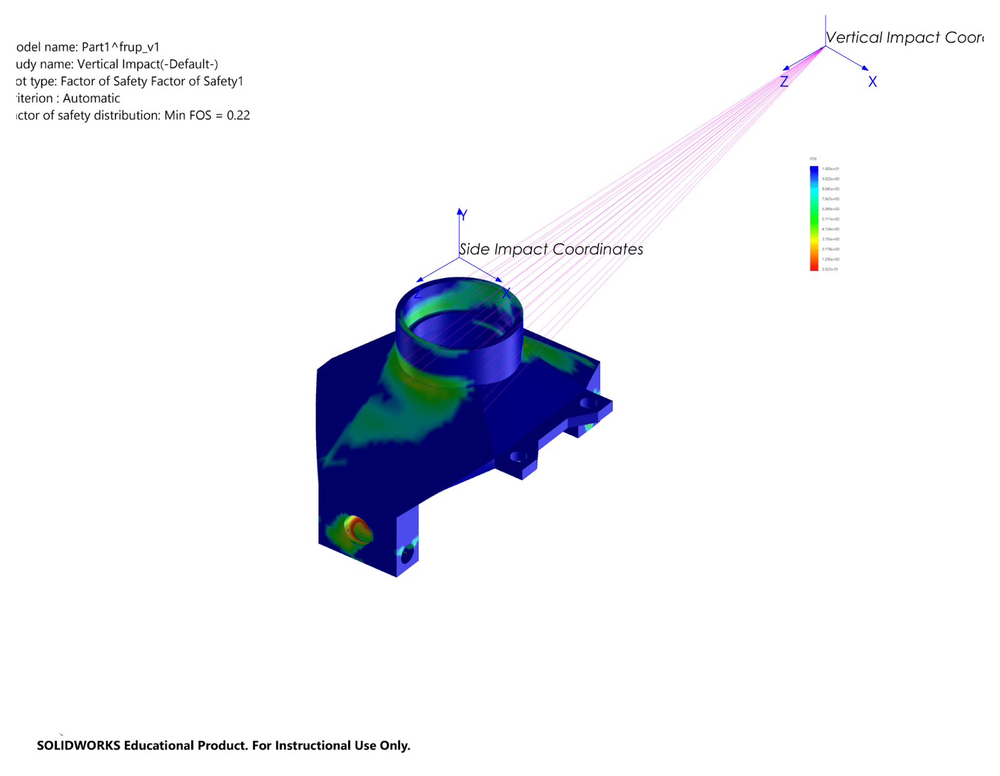
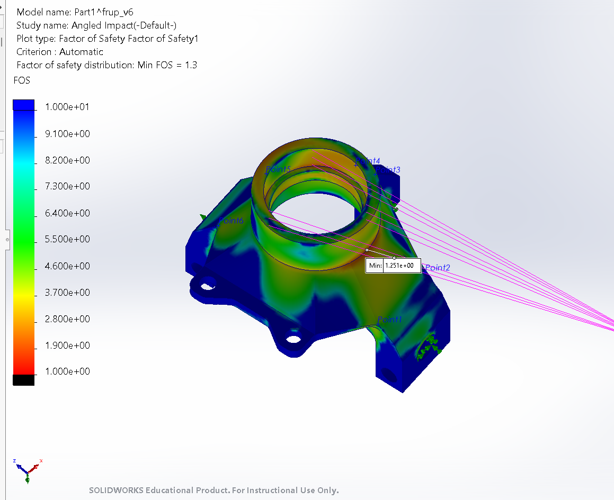
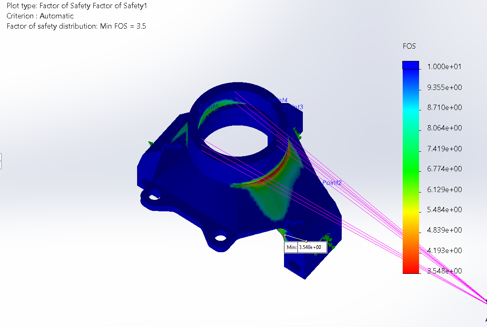
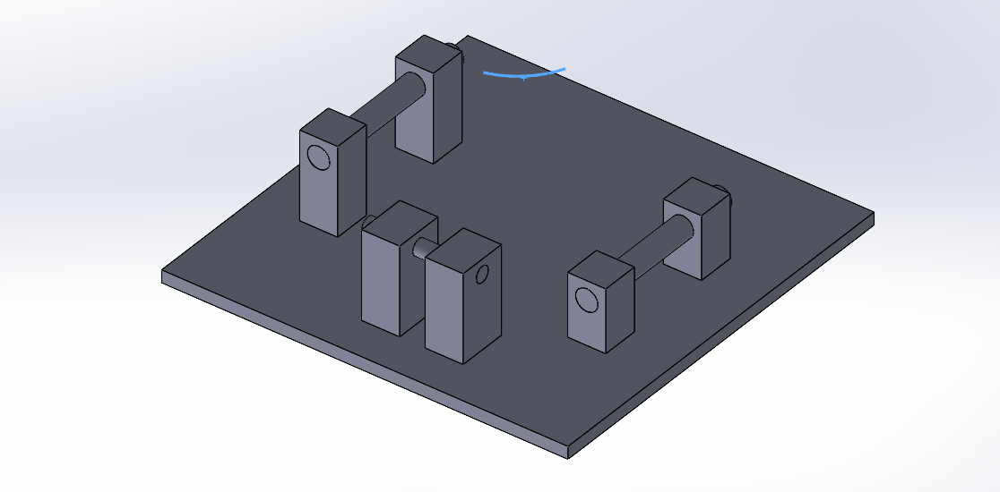
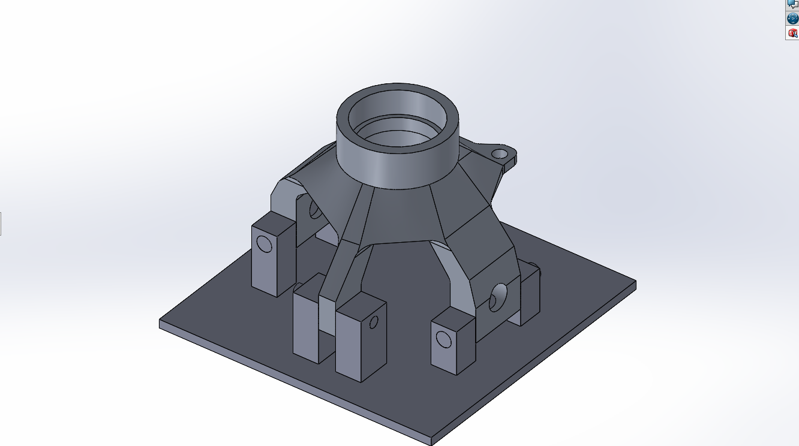

Front upright
The front upright ties the wheel, steering, and suspension together on Northwestern’s Baja SAE car. I redesigned it to survive jump landings and side impacts while weighing less than the year before.
- Team
- Northwestern Baja SAE
- Role
- Lead designer, front upright
- Dates
- 2025 to 2026
- Tools
- SolidWorks, FEA, CAM, 3-axis CNC mill
- Status
- Machined, tested, and revised

The problem
An off-road car lands jumps, hits ruts, and takes side impacts, and the upright carries all of those loads into the suspension. It also sits in unsprung mass, so every gram matters. The goal was a part that would survive race conditions while coming in lighter than the previous year’s design.
A parametric model
I built the upright as a fully parametric model driven by a small set of core dimensions and relationships. Changing a suspension parameter such as track width or caster angle updated the whole part, so I could chase weight and strength without accidentally breaking the car’s handling geometry.




Letting FEA set the shape
I simulated three worst-case load cases drawn from real race conditions, with static loads above 17,500 N:
- A vertical impact, for landing a jump.
- A side impact, for a collision or catching a rut in a corner.
- An angled impact, for a hit on the side of the tire.
The first vertical-impact run came back with a minimum factor of safety of 0.22. The part would have failed. That plot became the roadmap: I added material and ribs around the bearing bore and mounting points where stress concentrated, and removed material from the low-stress regions to win back weight.

After six iterations every study passed. The vertical case rose to a minimum factor of safety of 3.5. The angled impact became the governing case at 1.3, still above the team’s technical requirement. I noted where the weakest sections remained so I could keep surface finish smooth and tolerances tight there during machining.




0.22 → 3.5Minimum factor of safety, vertical impact
1.3Minimum factor of safety, worst case (angled impact)
0.38 lbLighter than the previous year’s upright
Machining it
I programmed CAM for a 3-axis CNC mill. The part has to be machined from both sides, so I designed a fixture plate that locates the blank on its bolt holes with dowel pins and bolts, holding position to ±0.001 in. after the flip.
Failure and redesign
During testing, an upright sheared in a crash. I ran a failure analysis on the broken part, identified the failure point and the stress concentrations that drove it, and revised the design before competition.
What I’d do next
Two directions: a multi-material upright with steel where it would reduce volume and possibly weight, and dynamic simulation (for example in Ansys) in place of single peak static loads.